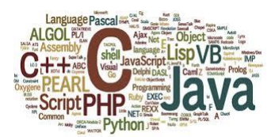

programming is the writing of a set of commands and what is known as code and these commands are what constitute what is known as the program programming languages These languages have specific rules for instructing computers to carry out specific tasks. Each programming language contains a set of words specific to keywords in addition to a specific method of writing and specifies how to program orders.
